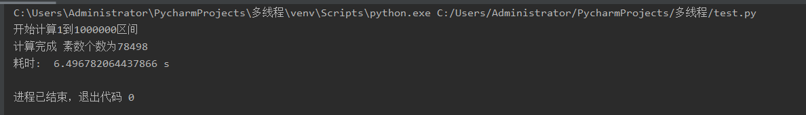
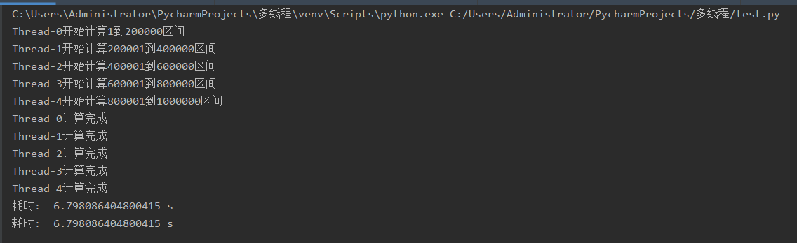

因为有需要，最近去学习了一下多线程，本来是只需要python的，结果又开了java课，没办法，只好顺带一起学了，做个对比也好。就拿素数为样例吧，本来应该是有一个多线程寻找开放的端口的，结果文件找不到了，也就换成求素数的，反正效果一样。
线程
最近心态有些失衡，有几个月没写东西。不想写一些关于操作之类的文章，写些需要动脑筋的文章转移一下注意力。
一讲线程就会和进程联系起来。线程和进程的区别是什么？
- 进程：是执行中一段程序，即一旦程序被载入到内存中并准备执行，它就是一个进程。进程是表示资源分配的的基本概念，又是调度运行的基本单位，是系统中的并发执行的单位。
线程：单个进程中执行中每个任务就是一个线程。线程是进程中执行运算的最小单位
这讲起来有些抽象，一般来说一个单独的应用会被系统分配一个进程，而一个应用里面的某些方法则可以被当作经进程，我这里找到了一个关于线程进程的比较有意思的故事。
然后我们通过程序来加深理解。
再举一个简单的例子，按以往的思维，我写一个程序，要做到边听歌边写作业，以往只能做到要么先听歌，要么先写作业，而多线程就是，给听歌和写作业每个分配一个线程，然后同时运行(这个同时在计算机里面也是有先后的，只是太短，我们以为的同时)
java多线程样例
java多线程有两种方法，一个是就是继承Thread类，一个就是实现Runnable接口;区别呢也就是继承Thread类的只能继承一次，接口的可以实现多次。我把两个都写一下，顺别巩固一下接口相关知识。
为了方便起见，我写了一个工具类，用来作为素数求解工具
Prime工具类
1 | package test; |
首先我们先来做个对比的，求五千万以内的素数个数
1 | public static void main(String[] args) { |
结果如下:
这里花了30多秒计算出来五千万个素数，当然算法也比较优越，如果是最原始的算法，应该会有一个多小时，昨天我跑八百万都花了十几分钟，也可能是电脑太渣了。
继承Thread类
关于继承Thread类的，其实也就是重写Thread类的run方法，run方法里面是线程start(开始)后运行的东西，我们在run函数里面写下我们想让执行的东西，每次start就会开启一个新线程执行run;
1 | package test; |
结果如下:
差别很明显，计算结果一样，但是时间差了几倍。
实现Runnable接口
首先，什么是接口，接口又是怎么实现的，我个人认为接口其实就是封装思维的最好体现，多个类之间通过接口访问，而不直接访问内部成员。就像是人和人之间，我们可以通过交流的方式获取别人的信息，而不是直接通过读取别人的脑子一样，这个三体人的样子我还记忆犹新。
我这里找到了一个usb接口的样例，讲道理接口更多像是一种协议，规定了访问方式，访问规则等待。
我们再来看看接口的实现方式,虽然最后时间结果应该是差不多的
1 | package test; |
结果如下
显然，程序上只有一个调用的区别，而实际的计算速度，差别不大。接口的好处在于，可以有多个类实现接口，而继承只能是单个的。比如说我有学生类，老师类，人类等等，我可以每个类都实现接口，然后在一个程序里创造一个对象就可以，而不是每次都继承Thread类。
当然上面的例子里我开了5个线程，那么线程是不是越多越好？或者是有个什么限定？
很显然，我上面开了10个线程，明显比5个线程的快了一些，但是线程数目不是越多越好，对于单核cpu来说，线程只是合理的分配时间，把每个线程都划分一个时间段，以此加快速度，但是对于持久计算来说，先算和后算的区别不是太大；对于多核cpu来说，开的线程数量合适就可以使cpu的每个核都分配一个线程，这样运算速度自然提升。
python多线程样例
Python中使用线程有两种方式：函数或者用类来包装线程对象，简单来说就是，我的线程运行的要么是函数，要么是对象
Python官方提供了两个线程包thread(python3改为_thread))和threading,当然thread的功能还是比较简陋的，所以我这里只拿threading做例子，毕竟人还是要与时俱进。
函数式线程
实际上就是我有几个函数，然后每个函数分配线程而已。同样拿求素数为例子吧,老规矩，先来一个工具类Prime，因为python是解释型语言的原因，我们把计算数据范围调小.
1 | class Prime: |
然后我们先测试一下单线程状态下的计算速度和时间
1 | if __name__ == '__main__': |

然后就是多线程下的计算.
1 | if __name__ == '__main__': |

类继承Thread类实现多线程
1 | class myThread (threading.Thread): |
这里我只给一个模板，实际上继承之后只要像Java那样实现run方法就行了。
python多线程总结
很显然python利用计算素数的效率慢很多，而且多线程并不比单线程计算要快。原因有俩个，一个是python是解释型语言，运行效率比编译型语言慢很多。另一个就是python并不适合高并发、多线程程序的编写
。
一般来说我们写的python多线程都是单核多线程，也就是说线程与线程之间都是交替执行的,只是速度很快。这不是意味我们并不能用python写多核并发，实际上python是可以利用c/c++
实现多核并发的。
参考: python的优势和劣势
多线程优化的原理
线程的应用主要是并发和并行。
- 并发(concurrency)：指在同一时刻只能有一条指令执行，但多个进程指令被快速的轮换执行，使得在宏观上具有多个进程同时执行的效果，但在微观上并不是同时执行的，只是把时间分成若干段，使多个进程快速交替的执行，避免阻塞和更有效利用资源。典型的例子有：在长时间工作的程序中使用工作线程避免界面失去响应。在网络下载程序中，使用多个线程提高对网络的使用效率，更快下载文件。
- 并行(parallel)：指在同一时刻，有多条指令在多个处理器上同时执行。所以无论从微观还是从宏观来看，二者都是一起执行的。
并发可以用在单核和多核处理器上，并行只能在多核处理器上。在我举的计算素数例子里面，如果我的电脑是单核的，多线程计算的速度可能并不会有优化，
对于单处理器系统，操作系统会轮流调度每个线程执行一小段时间，然后切换另一个线程，在切换的时候，保存当前线程使用的寄存器上下文和堆栈，并且在下次调度的时候恢复。这样线程中的程序感觉不到自己被中断过。对于多处理器系统，操作系统会将不同的线程调度给多个处理器，让它们并行执行。
以下为我复习计组总结的，如有偏差还望纠正
我们知道，程序运行在计算机里面实际上是下面这个过程
1
2
3
4
5--> 程序数据存入主存
--> CPU从主存中取指令
--> CPU执行指令之间读取数据
--> CPU写回运算结果
--> 输出设备输出结果
主存读写速度和cpu运算速度是不一致的，一般来说CPU运算速度会比主存读取速度快很多，而慢速的主存则会将快速的CPU速度降下来。
一台计算机中最核心的组件是 CPU、内存、以及 I/O 设备，这是冯罗伊曼体系结构决定的。三者速度依次减小。
程序的任务主要分两种类型，一种是I/O密集型（读写型），一种是CPU密集型（运算型）。注意：这个是相对概念。
程序的运行一般都是有顺序的，像一个队列一样。假设我们有两个任务，一个大量运算，一个UI显示，很显然，如果我们在执行任务1的时候，UI会卡住。所以我们的用户体验就会贼差，这时候就是并发的优势，我执行一段计算后再执行UI，两者交替执行，因为这个交替的速度很快，所以在用户看来，是同时执行的。